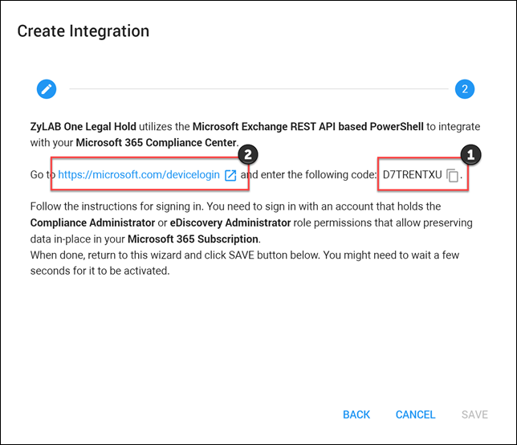
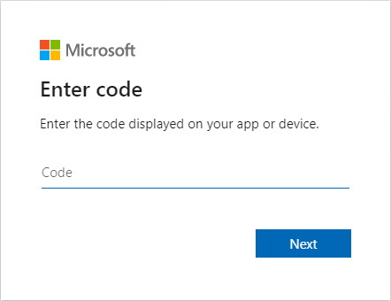
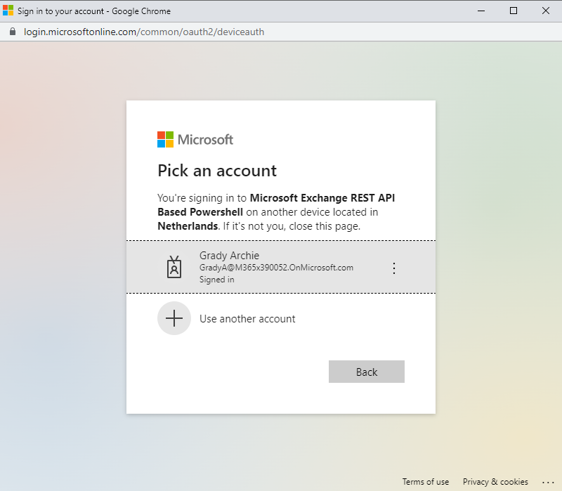
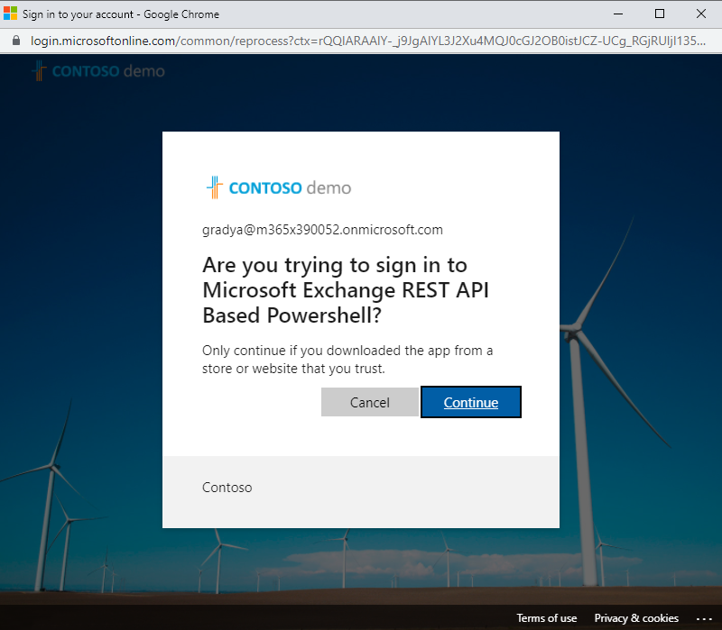
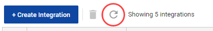
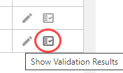
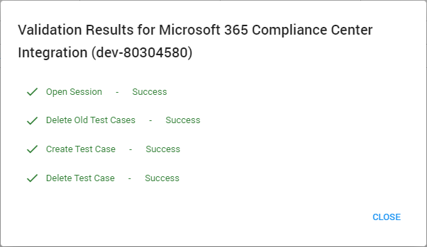

IMPORTANT: Please view Notes for Administrators on the Microsoft Purview Integration.
Preserving data in-place means you retain the data where it is actually being used, rather than moving it to a separate archiving solution or to a separate location.
LEGAL HOLD supports preservation in-place for Microsoft Purview formerly known as the Microsoft 365 Compliance Center using Standard eDiscovery. This means that for custodians that are part of a hold, you can preserve (put on hold) their Mailbox and OneDrive in Microsoft 365.
Mailbox and OneDrive preservation is bound to custodians, meaning that LEGAL HOLD will preserve the Mailbox and OneDrive for the custodians selected in your Hold.
In addition to custodian locations, you can also include in Teams, SharePoint and Shared Mailboxes to be preserved.
|
|
IMPORTANT: Please view Notes for Administrators on the Microsoft Purview Integration. |
Microsoft 365 Office Email or SendGrid Email
Shows the users that allowed sending emails on their behalf or perform synchronizations of the Address Book.
SendGrid Email is the email system of
These integrations can only be viewed. It gives the Administrator insight in the integrations and if the integrations are valid.
Select Manage your own integrations (top right corner) to enable or disable your own email preferences or to send a test message.
Select Create Integration.
Select the Integration Type and the Tenant. Click Next.

Authenticate the integration. First, copy the code. Then, go to https://microsoft.com/devicelogin

Paste the code and click Next.

Sign in with the account that has sufficient privileges to preserve data in-place in your Microsoft 365 subscription. You should have either Compliance Administrator (formerly known as eDiscovery Manager) or eDiscovery Administrator Role permissions.
For more information, please refer here (only available for Administrators):
https://compliance.microsoft.com/compliancecenterpermissions

Click Continue.

Once you have authenticated, the window can be closed and you can return to Create Integration wizard.
Click Save to finalize the integration.

Once the connection is established, a test is being executed (creation and removal of an in-place hold) to check if the integration has sufficient privileges. Select the Refresh icon (to move the status from Validating to Enabled).

View the validation report with the test results by clicking the Show Validation Results button.


As the authentication is limited in time, the Microsoft Purview Integrations can expire. Therefore you have a renew option for the integration.

With the integration completed, you can now create Preservation Locations to determine which locations need to be preserved in the hold.
Select Create Integration.
Select the Integration Type and the Tenant.

Click Next.
Click Save. The Validation Process will begin.
Click to show the Validation Results.
to show the Validation Results.

With the integration completed, you can now add preservation locations.
Open Locations.

Click  .
.
In the Preservation Location window, enter the below information:
Name: Define a name for the location
Preservation Type: Select Microsoft Purview
Source: Select your source

|
|
Note: Sources are now identified as Custodial |
Select your Tenant and click Save.
Related Topics:
 : Specific custodians or Non-Custodial
: Specific custodians or Non-Custodial  : Non specific custodians -shared groups.
: Non specific custodians -shared groups.